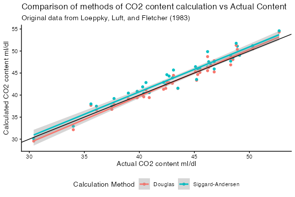

An R package for calculating carbon dioxide and oxygen content of blood.
The co2ntent package provides several canonical formulae from the literature, for the calculation of carbon dioxide and oxygen content of the blood.
Some data sets presented in the referenced literature are also included.
Several helper methods for units conversion are also provided.
Installing the development version
You can use the devtools package by Hadley Wickham to automate the process (make sure you follow the full instructions to get started):
if (! requireNamespace("devtools")) install.packages("devtools")
devtools::install_github("bakenzua/co2ntent")Example
This is an example demonstrating how con2tent can be used with tidyverse functions on the inbuilt dataset.
library(dplyr)
library(tidyr)
library(ggplot2)
library(co2ntent)
# Table 3 data from Douglas et al 1988
names(co2ntent::douglas_table_3)
# [1] "subject" "sample_type" "ph"
# [4] "haemoglobin_g_dl" "so2_fraction" "blood_co2_content_ml_dl"
# [7] "pco2_torr" "plasma_co2_content_ml_dl"
co2ntent::douglas_table_3 |>
mutate(
# calculate douglas blood content
douglas_calculated_content_blood_ml_dl = co2_content(
pco2 = pco2_torr,
ph = ph,
haemoglobin_g_dl = haemoglobin_g_dl,
so2_fraction = so2_fraction,
phase = "blood",
method = "douglas",
content_units = "ml/dL",
pressure_units = "mmHg"
),
siggaard_calculated_content_blood_ml_dl = co2_content(
# calculate hco3
hco3_mmols_l = purrr::map2_dbl(
pco2_torr,
ph,
actual_bicarbonate_content_mmol_l,
pressure_units = "mmHg"
),
pco2 = pco2_torr,
haemoglobin_g_dl = haemoglobin_g_dl,
so2_fraction = so2_fraction,
ph = ph,
phase = "blood",
method = "siggaard_andersen",
content_units = "ml/dL",
pressure_units = "mmHg"
)
) |>
select(
blood_co2_content_ml_dl,
douglas_calculated_content_blood_ml_dl,
siggaard_calculated_content_blood_ml_dl
) |>
pivot_longer(
c(
douglas_calculated_content_blood_ml_dl,
siggaard_calculated_content_blood_ml_dl
),
names_to = "calculated_method",
values_to = "calculated_content"
) |>
mutate(
calculated_method = if_else(
calculated_method == "douglas_calculated_content_blood_ml_dl",
"Douglas",
"Siggard-Andersen"
)
) |>
ggplot(aes(
blood_co2_content_ml_dl,
calculated_content,
colour = calculated_method
)) +
geom_point() +
geom_smooth(method = 'lm') +
geom_abline(slope = 1, intercept = 0) +
theme_classic() +
labs(
title = "Comparison of methods of CO2 content calculation vs Actual Content",
subtitle = "Original data from Loeppky, Luft, and Fletcher (1983)",
x = "Actual CO2 content ml/dl",
y = "Calculated CO2 content ml/dl",
colour = "Calculation Method"
) +
theme(
legend.position = "bottom"
)